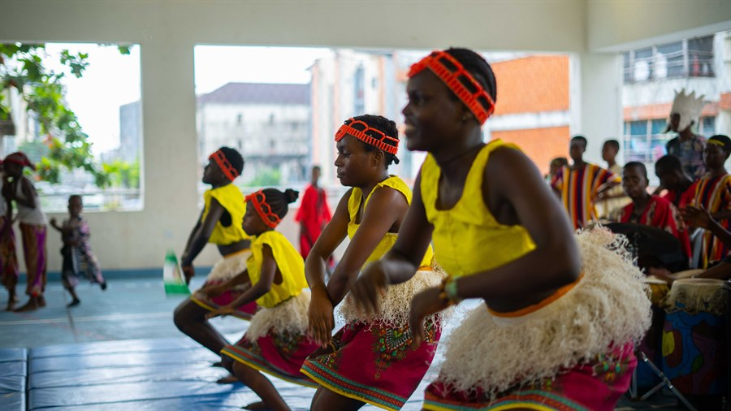

DANCE
INTRODUCTION
Dance is one of the most important aspects of Cultural and Creative Arts (CCA). It is a form of performing art where the body moves rhythmically to music, drumbeats, or singing in order to express ideas, feelings, culture, or stories. In CCA, dance is studied not just for physical exercise but as a cultural and artistic performance connected to music, drama, and stage expression.

MEANING OF DANCE
Dance is defined as The art of expressing emotions, culture, or ideas through rhythmic and patterned body movements, often accompanied by music or drums.
How to Dance
- Listen to the rhythm of the music or drumbeat.
- Start moving your body slowly in time with the beat.
- Use your hands, legs, waist, and head to create matching movements.
- Repeat your steps to follow the rhythm smoothly.
- Keep your movements steady and balanced.
- Watch your space to avoid hitting others.
- Show emotions with your face and body (e.g. joy, sadness, excitement).
- Dance alone, with a partner, or in a group depending on the performance.
- Practice regularly to improve your confidence and timing.
- Enjoy the movement and express yourself freely.
CHARACTERISTICS OF DANCE AS AN ART FORM
- It is expressive – it communicates emotions or stories.
- It is rhythmic – follows musical beats or chants.
- It is performed – it is meant to be seen by an audience.
- It is creative – it involves choreography and imagination.
- It is cultural – it carries traditional meaning and symbols.
ELEMENTS OF DANCE
- Rhythm – the timing and beat of the movement.
- Movement – body parts moving in space.
- Space – the area covered by the dancer.
- Energy – the strength or softness of each movement.
- Expression – the mood or message shown with face and body.
- Time – the speed or slowness of the dance.
TYPES OF DANCE
- Traditional Dance – Cultural dances from different tribes (e.g., Bata, Atilogwu, Koroso, Swange).
- Religious or Ceremonial Dance – Performed during festivals, worship, or rituals (e.g., masquerade dances).
- Social Dance – Done in celebrations like weddings, naming ceremonies, or communal events.
- Theatrical or Dramatic Dance – Used in stage plays, drama scenes, or storytelling.
- Modern Dance – Creative or contemporary dance forms used in music concerts or drama.
FUNCTIONS / USES OF DANCE
- Cultural Expression – Dance shows the tradition, lifestyle, and beliefs of a people.
- Storytelling – Dance is used to tell folk tales or history without words.
- Drama and Stage Support – Dance is used to change scenes, celebrate victories, or express emotions in plays.
- Entertainment – To amuse and excite an audience.
- Religious and Ceremonial Purposes – Dance is part of spiritual rituals and traditional worship.
- Music Support – Dance adds beauty and movement to musical performances.
- Education and Unity – Children learn discipline, rhythm, teamwork, and culture through dance.
TRADITIONAL DANCES IN NIGERIA (Examples by Tribe)
|
Tribe |
Dance Name |
When It Is Performed |
| 1 |
Yoruba |
Bata, Eyo |
Festivals, coronation, Sango worship |
| 2 |
Igbo |
Atilogwu |
Celebrations, ceremonies |
| 3 |
Hausa |
Koroso |
Weddings, sallah festivals |
| 4 |
Tiv |
Swange |
Cultural festivals |
| 5 |
Efik |
Ekombi |
Traditional ceremonies |
| 6 |
Ibibio |
Abang |
Community festivals |
DANCE IN MUSIC AND DRAMA
- It is used in Musicals (songs + drama + dance).
- It is used in Traditional plays (village festivals, coronation scenes, war or celebration scenes).
- It is used in Storytelling scenes (dancers act out parts of the story).
- It is used in Changing stage mood (joy, sorrow, victory).
QUALITIES OF A GOOD DANCER
- Creative and expressive
- Able to move rhythmically with music.
- Disciplined and coordinated.
- Culturally aware and respectful.
- Able to perform in groups or solo.
- Has good stage presence and energy
SKILLS DEVELOPED THROUGH DANCE
- Artistic creativity.
- Cultural appreciation.
- Stage confidence.
- Rhythm and coordination.
- Teamwork and discipline.
- Emotional intelligence.
Dance Costume and Make-up
Dance costume refers to any clothing worn by a dancer to suit the type of dance being performed. It can be traditional, modern, or cultural, depending on the music, story, or setting of the dance. Costumes help express the theme, mood, and purpose of the performance.
Dance make-up is the use of powders, paints, or facial designs to highlight the dancer’s face and show emotions or roles. It is used in both traditional and modern dances to make the performer more visible and expressive.
Examples of Dance Costumes
- Traditional dances: wrappers, beads, feathers, animal skins, tribal markings.
- Ballet dances: tutus, leotards, tights, ballet shoes.
- Hip-hop dances: sneakers, caps, loose trousers, T-shirts
- Cultural festivals: masks, bells, face coverings, drummers’ attire
- Contemporary or modern dance: jumpsuits, unitards, casual clothes
Examples of Dance Make-up
- African traditional dance: chalk patterns, tribal paint, white clay.
- Ballet or theatre dance: foundation, eye shadow, blush, lip colour.
- Stage performance dance: bold designs for stage lighting visibility.
- Hip-hop or pop culture dance: light make-up or no make-up, stylish hair.
Uses of Dance Costume and Make-up
- To express the culture or theme of the dance.
- To reflect the dancer’s character, tribe, or story.
- To add beauty and colour to the performance.
- To help the audience understand the meaning of the dance.
- To support lighting and stage effects.
- To show professionalism and attract attention